import warnings
import matplotlib.pyplot as plt
import numpy as np
import pandas as pd
import seaborn as sns
import statsmodels.api as sm
import statsmodels.graphics.gofplots as gof
from scipy.stats import chi2_contingency, chisquare
from statsmodels.formula.api import ols
from statsmodels.stats import outliers_influence as sm_oi
from statsmodels.stats.anova import anova_lm
warnings.filterwarnings("ignore")
sns.set_theme("notebook", "whitegrid")Statical Methods: Chi-Square, ANNOVA and Regression Analysis.
Custom Functions
def custom_statsmodel_OLS(_DF, *vars):
"""fitting OLS on specified independent and dependent variables- DF, dependent_var and independent_var"""
# sm.add_constant
try:
LOS_COLS = [v for v in vars]
_X = LOS_COLS[1:]
_Y = LOS_COLS[0]
xvars = sm.add_constant(_DF[_X])
yvar = _DF[_Y]
_model_spec = sm.OLS(yvar, xvars)
return _model_spec
except Exception as e:
print(f"There is an error while creating a model spec due to:{e}")
def custom_model_preds(_model, _new_df):
"""Predictions on new data points"""
_feat = sm.add_constant(_new_df)
_pred = _model.predict(sm.add_constant(_feat))
_df_pred = pd.DataFrame(_pred)
_df_pred.columns = ["predicted_y"]
return _df_pred
def custom_VIF(_MSPEC):
"""Custom function to get the VIF"""
var_names = _MSPEC.exog_names
X = _MSPEC.exog
_limit = X.shape[1]
try:
vif_dict = {}
for idx in range(_limit):
vif = round(sm_oi.variance_inflation_factor(X, idx), 5)
vif_dict[var_names[idx]] = vif
_DF = pd.DataFrame([vif_dict]).T
_DF.columns = ["VIF"]
_DF = _DF.reset_index()
df_sorted = _DF.iloc[1:].sort_values(by="VIF", ascending=False)
ax = sns.barplot(x="index", y="VIF", data=df_sorted)
# Add text labels to the top of each bar
for bar in ax.containers[0]:
ax.text(
bar.get_x() + bar.get_width() / 2,
bar.get_height(),
int(bar.get_height()),
ha="center",
va="bottom",
)
ax.set_xlabel("FIELD")
ax.set_ylabel("VIF")
plt.xticks(rotation=45)
plt.title("VIF")
plt.tight_layout()
plt.show()
except Exception as e:
pass
def custom_ols_qqplot(_resid):
"""Q-Q Plot of residuals"""
gof.qqplot(_resid, line="s")
plt.xlabel("Standard Normal Quantiles")
plt.ylabel("Standardized Residuals")
plt.title("Normal Q-Q plot")
plt.show()
def custom_ols_res_vs_fitted(_fitted, _resid):
"""Fitted Vs Residuals Plot"""
plt.scatter(_fitted, _resid)
plt.axhline("0", color="r")
plt.xlabel("Fitted Values")
plt.ylabel("Residual")
plt.title("Residual Vs Fitted")Chi-Square and Annova- Cases
# Importing data
df_ecom = pd.read_excel(
r"/Users/malleshamyamulla/Desktop/SSBBA/assignments/w4/data/ecom.xlsx"
)
df_smoke = pd.read_csv(
r"/Users/malleshamyamulla/Desktop/SSBBA/assignments/w4/data/smoking.csv"
)
df_health = pd.read_excel(
r"/Users/malleshamyamulla/Desktop/SSBBA/assignments/w4/data/HealthStats_SSBB.xlsx"
)df_ecom.head()| Gender | Age | Overall Use_Level | Amazon_Level | Flipkart_Level | Swiggy_Level | Zomato_Level | Others_Level | Overall CS_Rating | Overall CS_Level | |
|---|---|---|---|---|---|---|---|---|---|---|
| 0 | Male | 34 | Medium | High | Medium | Medium | Medium | Low | 7 | Medium |
| 1 | Male | 33 | High | High | Low | Medium | Medium | Medium | 9 | High |
| 2 | Female | 34 | High | High | Low | Low | Low | Medium | 8 | Medium |
| 3 | Male | 32 | Low | Medium | Medium | Low | Medium | Low | 8 | Medium |
| 4 | Female | 40 | Low | Low | Medium | Low | Low | Low | 7 | Low |
df_health.head()| Participant No. | Data Segment | Industry | Stress-Per | Stress-Pro | Activity_Level | Age | Sex | Height_cm | Weight_Kg | ... | BMI | BMI-Category | Body-Fat | Body Fat Level | Body-Age | Body Age Level | Body Age Level.1 | Cal-K | Happiness-Index | Happiness-Index-State | |
|---|---|---|---|---|---|---|---|---|---|---|---|---|---|---|---|---|---|---|---|---|---|
| 0 | 1 | Group-1 | ITES | Medium | High | High | 30 | F | 148.0 | 51.5 | ... | 23.5 | Normal | 31.2 | High | 37.0 | 7.0 | Normal | 1132.0 | 49 | Happy |
| 1 | 2 | Group-1 | Mfg & Process | Low | High | Medium | 40 | M | 163.0 | 79.4 | ... | 29.9 | High | 31.8 | High | 56.0 | 16.0 | Above | 1698.0 | 36 | Happy |
| 2 | 3 | Group-1 | ITES | Medium | Medium | High | 42 | F | 143.5 | 59.7 | ... | 28.8 | High | 36.5 | High | 55.0 | 13.0 | Above | 1232.0 | 24 | Happy |
| 3 | 4 | Group-1 | ITES | Medium | Medium | High | 34 | M | 170.0 | 78.4 | ... | 27.1 | High | 26.6 | Normal | 47.0 | 13.0 | Above | 1718.0 | 47 | Happy |
| 4 | 5 | Group-1 | Mfg & Process | Low | Medium | High | 31 | M | 170.0 | 96.2 | ... | 33.3 | Obese | 29.6 | Normal | 55.0 | 24.0 | Above | 1987.0 | 38 | Happy |
5 rows × 25 columns
df_ecom_sel = df_ecom[["Overall Use_Level", "Overall CS_Level"]]Experiment 1
Hypothesis
Ho: There is no association between Overall Usage and Customer CS Score(Independent)
Ha: There is an association between Overall Usage and Customer CS Score(Dependent)df_ecom_CT = (
pd.crosstab(df_ecom_sel["Overall Use_Level"], df_ecom_sel["Overall CS_Level"])
.reset_index()
.drop(["Overall Use_Level"], axis=1)
)
CS_LVEL = df_ecom_CT.to_numpy()_chi2, _pvalue, _ddof, _expected = chi2_contingency(CS_LVEL)print(
f"P-Value Caluclated is:{round(_pvalue,3)} which is lesser than to 0.05, hence we can reject the null hypothesis, degrees of freedom:{_ddof} and chi-square stat:{round(_chi2,5)}"
)P-Value Caluclated is:0.041 which is lesser than to 0.05, hence we can reject the null hypothesis, degrees of freedom:4 and chi-square stat:9.96292Experiment 2:
Hypothesis
Ho: There is no association between Maritual Status and Smoking
Ha: There is an association between Maritual Status and SmokingHypothesis
Ho: There is no association between Gender and Smoking
Ha: There is an association between Gender and Smokingdf_smoke_tidy = df_smoke[["marital_status", "smoke"]]
df_gender_tidy = df_smoke[["gender", "smoke"]]
df_smoke_CT = (
pd.crosstab(df_smoke_tidy["marital_status"], df_smoke_tidy["smoke"])
.reset_index()
.drop(["marital_status"], axis=1)
)
df_gender_CT = (
pd.crosstab(df_gender_tidy["gender"], df_gender_tidy["smoke"])
.reset_index()
.drop(["gender"], axis=1)
)
smoke_NUM = df_smoke_CT.to_numpy()
gender_NUM = df_gender_CT.to_numpy()# ChiSquare ex1
_chi2, _pvalue, _ddof, _expected = chi2_contingency(smoke_NUM)print(
f"P-Value Caluclated is:{round(_pvalue,3)} which is lesser than to 0.05, hence we can reject the null hypothesis, degrees of freedom:{_ddof} and chi-square stat:{round(_chi2,5)}"
)P-Value Caluclated is:0.0 which is lesser than to 0.05, hence we can reject the null hypothesis, degrees of freedom:4 and chi-square stat:74.97979# ChiSquare ex2
_chi2, _pvalue, _ddof, _expected = chi2_contingency(gender_NUM)print(
f"P-Value Caluclated is:{round(_pvalue,3)} which is greater than to 0.05, hence we failed to reject the null hypothesis, degrees of freedom:{_ddof} and chi-square stat:{round(_chi2,5)}"
)P-Value Caluclated is:0.513 which is greater than to 0.05, hence we failed to reject the null hypothesis, degrees of freedom:1 and chi-square stat:0.42699Experiment 3
Hypothesis
Ho: There is no association between Industry and HappyNess Index
Ha: There is an association between Industry and HappyNess Indexdf_health_CT = (
pd.crosstab(df_health["Industry"], df_health["Happiness-Index-State"])
.reset_index()
.drop(["Industry"], axis=1)
)
health_NUM = df_health_CT.to_numpy()# ChiSquare ex2
_chi2, _pvalue, _ddof, _expected = chi2_contingency(health_NUM)print(
f"P-Value Caluclated is:{round(_pvalue,3)} which is greater than to 0.05, hence we failed to reject the null hypothesis, degrees of freedom:{_ddof} and chi-square stat:{round(_chi2,5)}"
)P-Value Caluclated is:0.08 which is greater than to 0.05, hence we failed to reject the null hypothesis, degrees of freedom:2 and chi-square stat:5.05299Conclusions
There is an association between Maritual Status and Smoking
There is no association between Gender and Smoking
There is no association between Industry and HappyNess Index
Experiment 4:
Hypothesis
Ho: The average age of all marital status are equal
Ha: The average age of all marital status are not equalHypothesis
Ho: The average age of all usage level customers are equal
Ha: The average age of all usage level customers are not equal
Hypothesis
Ho: The average BMI of All industry participants are equal
Ha: The average BMI of All industry participants are not equaldf_msage = df_smoke[["marital_status", "age"]]
# Define the model formula
model_1 = ols("age ~ marital_status", data=df_msage).fit()
# Perform ANOVA
anova_table_ex1 = anova_lm(model_1)
# Print ANOVA results
print(anova_table_ex1) df sum_sq mean_sq F PR(>F)
marital_status 4.0 234048.777309 58512.194327 274.597439 7.189135e-182
Residual 1686.0 359258.847765 213.083540 NaN NaNprint(
f"P-Value Caluclated is:{round(anova_table_ex1['PR(>F)'][0],3)} which is lesser than to 0.05, hence we can reject the null hypothesis"
)P-Value Caluclated is:0.0 which is lesser than to 0.05, hence we can reject the null hypothesisdf_cs = df_ecom[["Overall Use_Level", "Age"]]
df_cs.columns = ["usage", "age"]
# Define the model formula
model_2 = ols("age ~ usage", data=df_cs).fit()
# Perform ANOVA
anova_table_ex2 = anova_lm(model_2)
# Print ANOVA results
print(anova_table_ex2) df sum_sq mean_sq F PR(>F)
usage 2.0 23.580519 11.790260 0.17447 0.840748
Residual 30.0 2027.328571 67.577619 NaN NaNprint(
f"P-Value Caluclated is:{round(anova_table_ex2['PR(>F)'][0],3)} which is greater than to 0.05, hence we failed to reject the null hypothesis"
)P-Value Caluclated is:0.841 which is greater than to 0.05, hence we failed to reject the null hypothesisdf_h = df_health[["Industry", "BMI"]]
# Define the model formula
model_3 = ols("BMI ~ Industry", data=df_h).fit()
# Perform ANOVA
anova_table_ex3 = anova_lm(model_3)
# Print ANOVA results
print(anova_table_ex3) df sum_sq mean_sq F PR(>F)
Industry 2.0 173.765060 86.882530 5.370873 0.005568
Residual 153.0 2475.021863 16.176613 NaN NaNprint(
f"P-Value Caluclated is:{round(anova_table_ex3['PR(>F)'][0],3)} which is lesser than to 0.05, hence we reject the null hypothesis"
)P-Value Caluclated is:0.006 which is lesser than to 0.05, hence we reject the null hypothesisConclusions
The average age of all usage level customers are equal
The average age of all marital status are not equal
The average BMI of All industry participants are not equal
Linear Regression Analysis - Cases
Case 2: Auto
Data Importing, Prep and EDA
df_auto = pd.read_csv(
r"/Users/malleshamyamulla/Desktop/SSBBA/assignments/w4/data/auto.csv"
)df_auto.head()| mpg | cylinders | displacement | horsepower | weight | acceleration | year | origin | |
|---|---|---|---|---|---|---|---|---|
| 0 | 18.0 | 8 | 307.0 | 130 | 3504 | 12.0 | 70 | 1 |
| 1 | 15.0 | 8 | 350.0 | 165 | 3693 | 11.5 | 70 | 1 |
| 2 | 18.0 | 8 | 318.0 | 150 | 3436 | 11.0 | 70 | 1 |
| 3 | 16.0 | 8 | 304.0 | 150 | 3433 | 12.0 | 70 | 1 |
| 4 | 17.0 | 8 | 302.0 | 140 | 3449 | 10.5 | 70 | 1 |
sns.heatmap(
df_auto[["mpg", "horsepower", "weight", "acceleration", "displacement"]].corr(),
annot=True,
)
plt.show()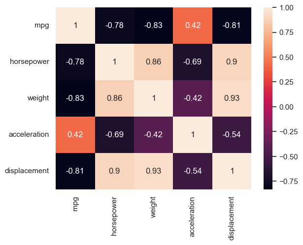
sns.pairplot(df_auto[["mpg", "horsepower", "weight", "acceleration", "displacement"]])
plt.show()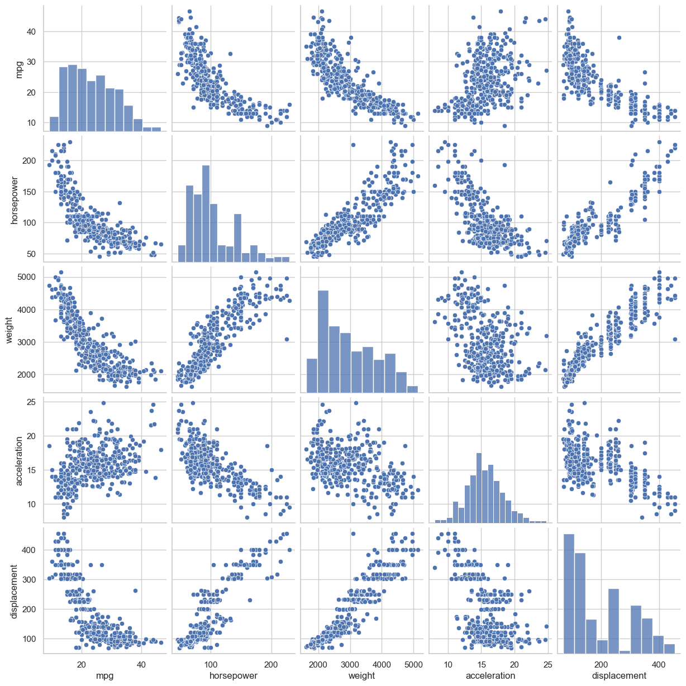
Regression Model
Experiment 1: One Numerical: mpg=f(horsepower)
SL1 = custom_statsmodel_OLS(df_auto, "mpg", "horsepower")SL1_modelfit = SL1.fit()print(SL1_modelfit.summary2()) Results: Ordinary least squares
==================================================================
Model: OLS Adj. R-squared: 0.605
Dependent Variable: mpg AIC: 2361.3237
Date: 2024-03-29 11:15 BIC: 2369.2662
No. Observations: 392 Log-Likelihood: -1178.7
Df Model: 1 F-statistic: 599.7
Df Residuals: 390 Prob (F-statistic): 7.03e-81
R-squared: 0.606 Scale: 24.066
-------------------------------------------------------------------
Coef. Std.Err. t P>|t| [0.025 0.975]
-------------------------------------------------------------------
const 39.9359 0.7175 55.6598 0.0000 38.5252 41.3465
horsepower -0.1578 0.0064 -24.4891 0.0000 -0.1705 -0.1452
------------------------------------------------------------------
Omnibus: 16.432 Durbin-Watson: 0.920
Prob(Omnibus): 0.000 Jarque-Bera (JB): 17.305
Skew: 0.492 Prob(JB): 0.000
Kurtosis: 3.299 Condition No.: 322
==================================================================
Notes:
[1] Standard Errors assume that the covariance matrix of the
errors is correctly specified.\(\hat{mpg}={39.9359}+(-0.15)*\hat{horsepower}+e\)
Inferences:
In our case p-value caluclated for HorsePower is 0 hence we can reject the null in favor of alternate i.e there is a truly relationship between Horsepower and MPG.
For every increase of 1 unit in HorsePower, there is an associated decrease of, on average, 0.15 units of MPG.
An average of MPG is 39 when the Horsepower is 0
The proportion of variability in the outcome variable i.e bike count explained by this model is about 0.60
custom_ols_qqplot(SL1_modelfit.resid)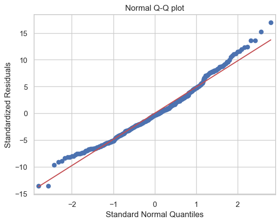
custom_ols_res_vs_fitted(SL1_modelfit.fittedvalues, SL1_modelfit.resid)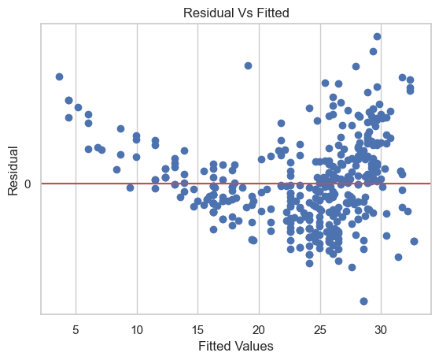
Experiment2: two numericals: mpg=f(horsepower,acceleration)
SL2 = custom_statsmodel_OLS(df_auto, "mpg", "horsepower", "acceleration")SL2_modelfit = SL2.fit()print(SL2_modelfit.summary2()) Results: Ordinary least squares
==================================================================
Model: OLS Adj. R-squared: 0.628
Dependent Variable: mpg AIC: 2338.2770
Date: 2024-03-29 11:15 BIC: 2350.1908
No. Observations: 392 Log-Likelihood: -1166.1
Df Model: 2 F-statistic: 331.7
Df Residuals: 389 Prob (F-statistic): 8.67e-85
R-squared: 0.630 Scale: 22.635
-------------------------------------------------------------------
Coef. Std.Err. t P>|t| [0.025 0.975]
-------------------------------------------------------------------
const 52.5593 2.5870 20.3164 0.0000 47.4730 57.6457
horsepower -0.1880 0.0086 -21.7883 0.0000 -0.2049 -0.1710
acceleration -0.6098 0.1204 -5.0662 0.0000 -0.8464 -0.3731
------------------------------------------------------------------
Omnibus: 31.573 Durbin-Watson: 0.984
Prob(Omnibus): 0.000 Jarque-Bera (JB): 37.488
Skew: 0.685 Prob(JB): 0.000
Kurtosis: 3.647 Condition No.: 1209
==================================================================
Notes:
[1] Standard Errors assume that the covariance matrix of the
errors is correctly specified.
[2] The condition number is large, 1.21e+03. This might indicate
that there are strong multicollinearity or other numerical
problems.\(\hat{mpg}={52.5593}+(-0.18)*\hat{horsepower}+(-0.60)*\hat{acceleration}+e\)
Inferences:
p-value caluclated
- for HorsePower is 0 hence we can reject the null in favor of alternate i.e there is a truly relationship between Horsepower and MPG.
- for Accelaration is 0 hence we can reject the null in favor of alternate i.e there is a truly relationship between Accelaration and MPG.
For every increase of 1 unit in HorsePower, there is an associated decrease of, on average, 0.18 units of MPG.
For every increase of 1 unit in Accelaration, there is an associated decrease of, on average, 0.6 units of MPG.
An average of MPG is 52 when the Horsepower is 0
The proportion of variability in the outcome variable i.e bike count explained by this model is about 0.62
custom_ols_qqplot(SL2_modelfit.resid)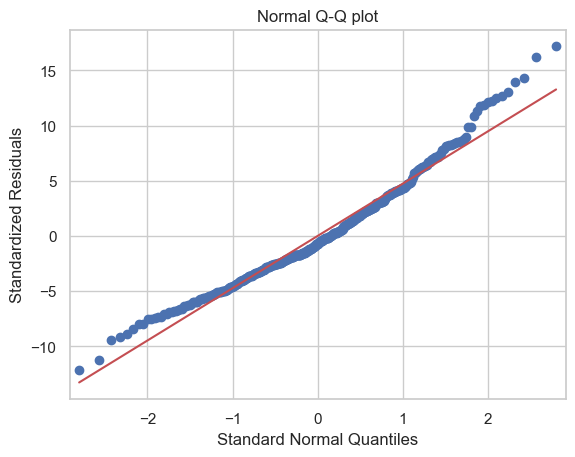
custom_ols_res_vs_fitted(SL2_modelfit.fittedvalues, SL1_modelfit.resid)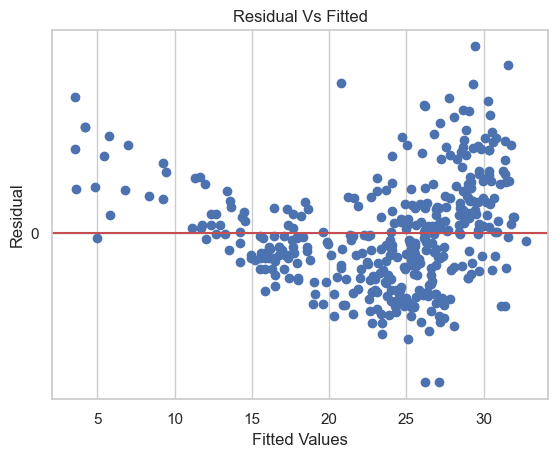
custom_VIF(SL2)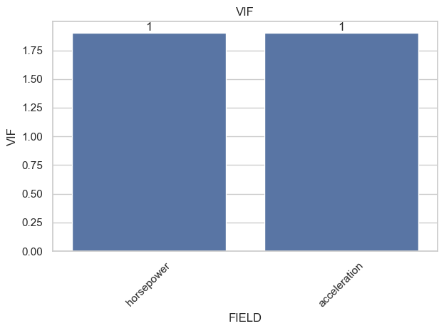
Experiment3: More than 2 numericals: mpg=f(“horsepower”, “weight”, “acceleration”, “displacement”)
SL3 = custom_statsmodel_OLS(
df_auto, "mpg", "horsepower", "weight", "acceleration", "displacement"
)SL3_modelfit = SL3.fit()print(SL3_modelfit.summary2()) Results: Ordinary least squares
==================================================================
Model: OLS Adj. R-squared: 0.704
Dependent Variable: mpg AIC: 2251.1955
Date: 2024-03-29 11:15 BIC: 2271.0518
No. Observations: 392 Log-Likelihood: -1120.6
Df Model: 4 F-statistic: 233.4
Df Residuals: 387 Prob (F-statistic): 9.63e-102
R-squared: 0.707 Scale: 18.035
-------------------------------------------------------------------
Coef. Std.Err. t P>|t| [0.025 0.975]
-------------------------------------------------------------------
const 45.2511 2.4560 18.4244 0.0000 40.4223 50.0800
horsepower -0.0436 0.0166 -2.6312 0.0088 -0.0762 -0.0110
weight -0.0053 0.0008 -6.5123 0.0000 -0.0069 -0.0037
acceleration -0.0231 0.1256 -0.1843 0.8539 -0.2701 0.2238
displacement -0.0060 0.0067 -0.8944 0.3717 -0.0192 0.0072
------------------------------------------------------------------
Omnibus: 38.359 Durbin-Watson: 0.861
Prob(Omnibus): 0.000 Jarque-Bera (JB): 51.333
Skew: 0.715 Prob(JB): 0.000
Kurtosis: 4.049 Condition No.: 35594
==================================================================
Notes:
[1] Standard Errors assume that the covariance matrix of the
errors is correctly specified.
[2] The condition number is large, 3.56e+04. This might indicate
that there are strong multicollinearity or other numerical
problems.\(\hat{mpg}={45.2511}+(-0.04)*\hat{horsepower}+(0.0053)*\hat{weight}+(0.0231)*\hat{acceleration}+(-0.0060)*\hat{displacement}+e\)
Inferences:
p-value caluclated
- for HorsePower is 0 hence we can reject the null in favor of alternate i.e there is a truly relationship between Horsepower and MPG.
- for Weight is 0 hence we can reject the null in favor of alternate i.e there is a truly relationship between Weight and MPG.
- for Accelaration is 0.85 we fail to reject the null i.e there is NO truly relationship between Accelaration and MPG.
- for Displacement is 0.37 we fail to reject the null i.e there is NO truly relationship between Displacement and MPG.
For every increase of 1 unit in HorsePower, there is an associated decrease of, on average, 0.04 units of MPG.
For every increase of 1 unit in weight, there is an associated decrease of, on average, 0.005 units of MPG.
An average of MPG is 45.25 when the Horsepower is 0
The proportion of variability in the outcome variable i.e bike count explained by this model is about 0.704
custom_VIF(SL3)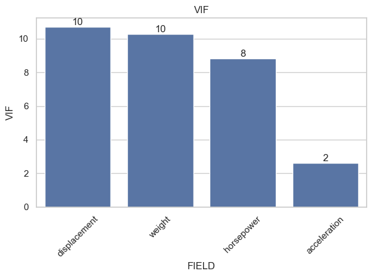
Case 3: CarSeats
Data Importing and Prep
df_carseats = pd.read_csv(
r"/Users/malleshamyamulla/Desktop/SSBBA/assignments/w4/data/carseats.csv"
)df_carseats = pd.get_dummies(
df_carseats, columns=["ShelveLoc", "Urban", "US"], dtype="int", drop_first=True
)df_carseats.head()| Sales | CompPrice | Income | Advertising | Population | Price | Age | Education | ShelveLoc_Good | ShelveLoc_Medium | Urban_Yes | US_Yes | |
|---|---|---|---|---|---|---|---|---|---|---|---|---|
| 0 | 9.50 | 138 | 73 | 11 | 276 | 120 | 42 | 17 | 0 | 0 | 1 | 1 |
| 1 | 11.22 | 111 | 48 | 16 | 260 | 83 | 65 | 10 | 1 | 0 | 1 | 1 |
| 2 | 10.06 | 113 | 35 | 10 | 269 | 80 | 59 | 12 | 0 | 1 | 1 | 1 |
| 3 | 7.40 | 117 | 100 | 4 | 466 | 97 | 55 | 14 | 0 | 1 | 1 | 1 |
| 4 | 4.15 | 141 | 64 | 3 | 340 | 128 | 38 | 13 | 0 | 0 | 1 | 0 |
sns.heatmap(
df_carseats[
[
"Sales",
"CompPrice",
"Income",
"Advertising",
"Population",
"Price",
"Age",
"Education",
]
].corr(),
annot=True,
)
plt.show()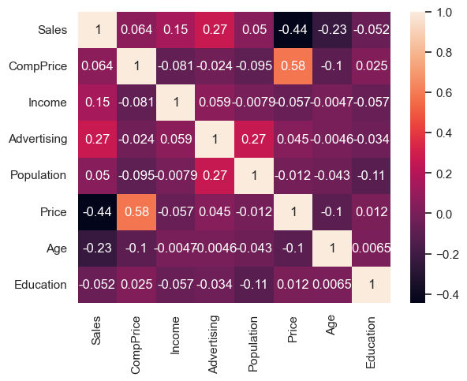
sns.pairplot(
df_carseats[
["Sales", "CompPrice", "Income", "Advertising", "Population", "Price", "Age"]
]
)
plt.show()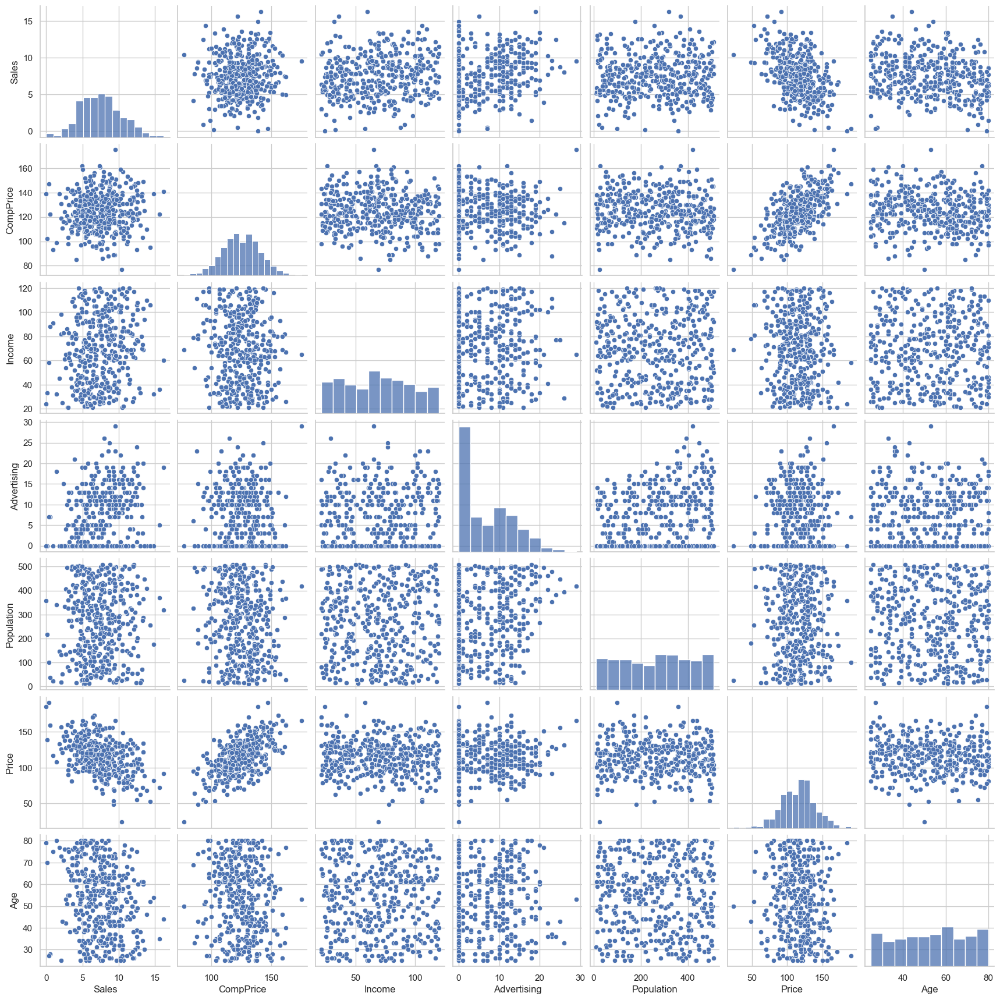
Regression Model
Experiment 1: More than 1 Numericals: Sales=f(“CompPrice”,“Income”,“Advertising”,“Population”,“Price”,“Age”,“Education”)
car_SL1 = custom_statsmodel_OLS(
df_carseats,
"Sales",
"CompPrice",
"Income",
"Advertising",
"Population",
"Price",
"Age",
"Education",
)car_SL1_fit = car_SL1.fit()print(car_SL1_fit.summary2()) Results: Ordinary least squares
==================================================================
Model: OLS Adj. R-squared: 0.533
Dependent Variable: Sales AIC: 1668.6475
Date: 2024-03-29 11:15 BIC: 1700.5792
No. Observations: 400 Log-Likelihood: -826.32
Df Model: 7 F-statistic: 66.18
Df Residuals: 392 Prob (F-statistic): 1.41e-62
R-squared: 0.542 Scale: 3.7208
-------------------------------------------------------------------
Coef. Std.Err. t P>|t| [0.025 0.975]
-------------------------------------------------------------------
const 7.7077 1.1176 6.8965 0.0000 5.5104 9.9050
CompPrice 0.0939 0.0078 11.9797 0.0000 0.0785 0.1093
Income 0.0129 0.0035 3.7034 0.0002 0.0060 0.0197
Advertising 0.1309 0.0151 8.6539 0.0000 0.1011 0.1606
Population -0.0001 0.0007 -0.1802 0.8571 -0.0015 0.0012
Price -0.0925 0.0051 -18.3137 0.0000 -0.1025 -0.0826
Age -0.0450 0.0060 -7.4854 0.0000 -0.0568 -0.0332
Education -0.0400 0.0371 -1.0770 0.2821 -0.1130 0.0330
------------------------------------------------------------------
Omnibus: 8.263 Durbin-Watson: 1.969
Prob(Omnibus): 0.016 Jarque-Bera (JB): 7.705
Skew: 0.288 Prob(JB): 0.021
Kurtosis: 2.639 Condition No.: 4049
==================================================================
Notes:
[1] Standard Errors assume that the covariance matrix of the
errors is correctly specified.
[2] The condition number is large, 4.05e+03. This might indicate
that there are strong multicollinearity or other numerical
problems.Inferences 1. P-value caluclated - For CompPrice is 0.00, we can reject the null in favor of alternate i.e there is a truly relationship between ComPrice and Sales. - For Income is 0.00, we can reject the null in favor of alternate i.e there is a truly relationship between Income and Sales. - For Advertising is 0.0002, we can reject the null i.e there is a truly relationship between Advertising and Sales. - For Price is 0.00, we can reject the null i.e there is a truly relationship between Price and Sales. - For Age is 0.00, we can reject the null i.e there is a truly relationship between Age and Sales. - For Education is 0.28, we fail to reject the null i.e there is NO truly relationship between Education and Sales. - For Population is 0.85, we fail to reject the null i.e there is NO truly relationship between Population and Sales.
Taking into account all the other explanatory variables in our model,
- for every increase of one unit in CompPrice, there is an associated increase of on average 0.09 in Sales
- for every increase of one unit in Income, there is an associated increase of on average 0.01 in Sales
- for every increase of one unit in Advertising, there is an associated increase of on average 0.13 in Sales.
- for every increase of one unit in Price, there is an associated decreased of on average 0.09 in Sales.
- for every increase of one unit in Age, there is an associated decreased of on average 0.04 in Sales.
An average of Sales 7.7 when all the exploratory variables are zero
The proportion of variability in the outcome variable i.e bike count explained by this model is about 0.53
custom_VIF(car_SL1)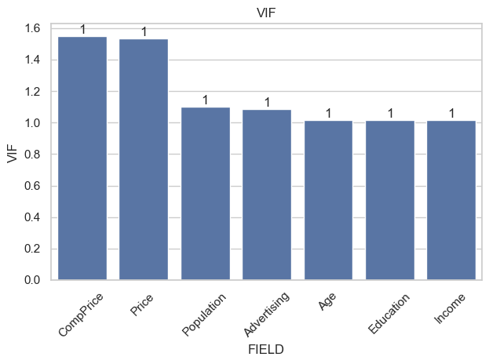
custom_ols_qqplot(car_SL1_fit.resid)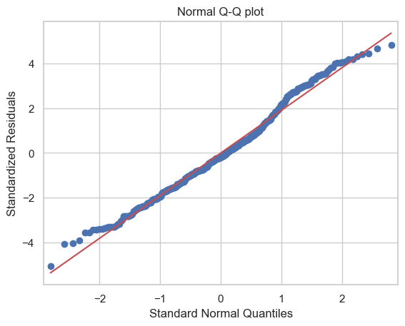
custom_ols_res_vs_fitted(car_SL1_fit.fittedvalues, car_SL1_fit.resid)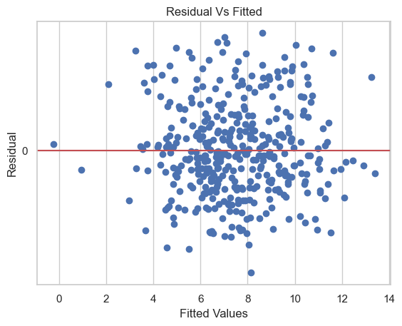
Experiment 2: More than 1 Numericals and Categorical: Sales=f(“CompPrice”,“Income”,“Advertising”,“Population”,“Price”,“Age”,“Education”,“ShelveLoc_Good”,“ShelveLoc_Medium”,“Urban_Yes”,“US_Yes”)
car_SL2 = custom_statsmodel_OLS(
df_carseats,
"Sales",
"CompPrice",
"Income",
"Advertising",
"Population",
"Price",
"Age",
"Education",
"ShelveLoc_Good",
"ShelveLoc_Medium",
"Urban_Yes",
"US_Yes",
)car_SL2_fit = car_SL2.fit()print(car_SL2_fit.summary2()) Results: Ordinary least squares
==================================================================
Model: OLS Adj. R-squared: 0.870
Dependent Variable: Sales AIC: 1161.9744
Date: 2024-03-29 11:15 BIC: 1209.8719
No. Observations: 400 Log-Likelihood: -568.99
Df Model: 11 F-statistic: 243.4
Df Residuals: 388 Prob (F-statistic): 1.60e-166
R-squared: 0.873 Scale: 1.0382
------------------------------------------------------------------
Coef. Std.Err. t P>|t| [0.025 0.975]
------------------------------------------------------------------
const 5.6606 0.6034 9.3805 0.0000 4.4742 6.8471
CompPrice 0.0928 0.0041 22.3778 0.0000 0.0847 0.1010
Income 0.0158 0.0018 8.5647 0.0000 0.0122 0.0194
Advertising 0.1231 0.0111 11.0660 0.0000 0.1012 0.1450
Population 0.0002 0.0004 0.5611 0.5750 -0.0005 0.0009
Price -0.0954 0.0027 -35.7002 0.0000 -0.1006 -0.0901
Age -0.0460 0.0032 -14.4718 0.0000 -0.0523 -0.0398
Education -0.0211 0.0197 -1.0700 0.2853 -0.0599 0.0177
ShelveLoc_Good 4.8502 0.1531 31.6778 0.0000 4.5492 5.1512
ShelveLoc_Medium 1.9567 0.1261 15.5165 0.0000 1.7088 2.2047
Urban_Yes 0.1229 0.1130 1.0877 0.2774 -0.0992 0.3450
US_Yes -0.1841 0.1498 -1.2286 0.2200 -0.4787 0.1105
------------------------------------------------------------------
Omnibus: 0.811 Durbin-Watson: 2.013
Prob(Omnibus): 0.667 Jarque-Bera (JB): 0.765
Skew: 0.107 Prob(JB): 0.682
Kurtosis: 2.994 Condition No.: 4146
==================================================================
Notes:
[1] Standard Errors assume that the covariance matrix of the
errors is correctly specified.
[2] The condition number is large, 4.15e+03. This might indicate
that there are strong multicollinearity or other numerical
problems.Inferences 1. P-value caluclated - For CompPrice is 0.00, we can reject the null in favor of alternate i.e there is a truly relationship between ComPrice and Sales. - For Income is 0.00, we can reject the null in favor of alternate i.e there is a truly relationship between Income and Sales. - For Advertising is 0.00, we can reject the null i.e there is a truly relationship between Advertising and Sales. - For Price is 0.00, we can reject the null i.e there is a truly relationship between Price and Sales. - For Age is 0.00, we can reject the null i.e there is a truly relationship between Age and Sales. - For Education is 0.28, we fail to reject the null i.e there is NO truly relationship between Education and Sales. - For Population is 0.85, we fail to reject the null i.e there is NO truly relationship between Population and Sales. - For Uran Yes, we fail to reject the null i.e there is NO truly relationship between Urban and Sales. - For US Yes, we fail to reject the null i.e there is NO truly relationship between US and Sales.
Taking into account all the other explanatory variables in our model,
- for every increase of one unit in CompPrice, there is an associated increase of on average 0.09 in Sales
- for every increase of one unit in Income, there is an associated increase of on average 0.01 in Sales
- for every increase of one unit in Advertising, there is an associated increase of on average 0.12 in Sales.
- for every increase of one unit in Price, there is an associated decreased of on average 0.09 in Sales.
- for every increase of one unit in Age, there is an associated decreased of on average 0.04 in Sales.
- For ShelveLoc_Good the average number of Sales 4.85 units higher on average compared to the ShelveLoc_Bad
- For ShelveLoc_Medium the average number of Sales 1.95 units higher on average compared to the ShelveLoc_Bad
An average of Sales 5.6 when all the exploratory variables are zero
The proportion of variability in the outcome variable i.e bike count explained by this model is about 0.87
custom_VIF(car_SL2)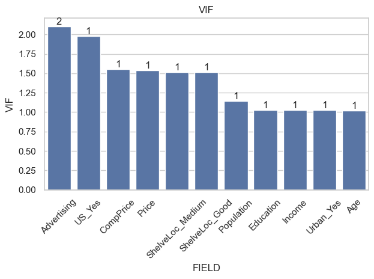
Case 4: BodyFat
Data Importing and Prep
df_bodyfat = pd.read_csv(
r"/Users/malleshamyamulla/Desktop/SSBBA/assignments/w4/data/bodyfat.csv"
)df_bodyfat.head()| Density | Age | Weight | Height | ADI | FFW | Neck | Chest | ADC | Hip | Thigh | Knee | Ankle | EBC | FC | WC | Body Fat | |
|---|---|---|---|---|---|---|---|---|---|---|---|---|---|---|---|---|---|
| 0 | 1.0708 | 23 | 154.25 | 67.75 | 23.7 | 134.9 | 36.2 | 93.1 | 85.2 | 94.5 | 59.0 | 37.3 | 21.9 | 32.0 | 27.4 | 17.1 | 12.6 |
| 1 | 1.0853 | 22 | 173.25 | 72.25 | 23.4 | 161.3 | 38.5 | 93.6 | 83.0 | 98.7 | 58.7 | 37.3 | 23.4 | 30.5 | 28.9 | 18.2 | 6.9 |
| 2 | 1.0414 | 22 | 154.00 | 66.25 | 24.7 | 116.0 | 34.0 | 95.8 | 87.9 | 99.2 | 59.6 | 38.9 | 24.0 | 28.8 | 25.2 | 16.6 | 24.6 |
| 3 | 1.0751 | 26 | 184.75 | 72.25 | 24.9 | 164.7 | 37.4 | 101.8 | 86.4 | 101.2 | 60.1 | 37.3 | 22.8 | 32.4 | 29.4 | 18.2 | 10.9 |
| 4 | 1.0340 | 24 | 184.25 | 71.25 | 25.6 | 133.1 | 34.4 | 97.3 | 100.0 | 101.9 | 63.2 | 42.2 | 24.0 | 32.2 | 27.7 | 17.7 | 27.8 |
sns.heatmap(df_bodyfat.corr(), annot=True)
plt.show()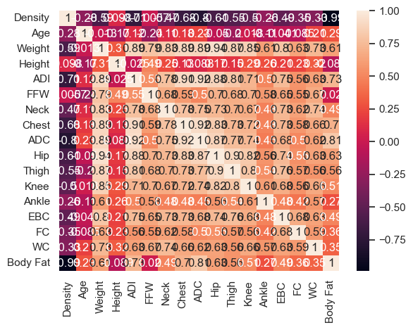
Regression Model
Experiment 1:
body_fat_SL = custom_statsmodel_OLS(
df_bodyfat,
"Body Fat",
"Density",
"Age",
"Weight",
"Height",
"ADI",
"FFW",
"Neck",
"Chest",
"ADC",
"Hip",
"Thigh",
"Knee",
"Ankle",
"EBC",
"FC",
"WC",
)body_fat_SL_fit = body_fat_SL.fit()print(body_fat_SL_fit.summary2()) Results: Ordinary least squares
==================================================================
Model: OLS Adj. R-squared: 0.986
Dependent Variable: Body Fat AIC: 680.7642
Date: 2024-03-29 11:15 BIC: 740.7645
No. Observations: 252 Log-Likelihood: -323.38
Df Model: 16 F-statistic: 1138.
Df Residuals: 235 Prob (F-statistic): 1.62e-212
R-squared: 0.987 Scale: 0.81750
------------------------------------------------------------------
Coef. Std.Err. t P>|t| [0.025 0.975]
------------------------------------------------------------------
const 253.2587 15.2445 16.6132 0.0000 223.2255 283.2920
Density -234.0972 13.1352 -17.8221 0.0000 -259.9750 -208.2193
Age 0.0057 0.0068 0.8377 0.4030 -0.0077 0.0192
Weight 0.1594 0.0164 9.7451 0.0000 0.1272 0.1916
Height 0.0125 0.0235 0.5314 0.5956 -0.0339 0.0589
ADI -0.2339 0.0645 -3.6260 0.0004 -0.3610 -0.1068
FFW -0.2301 0.0183 -12.5450 0.0000 -0.2662 -0.1939
Neck 0.0199 0.0499 0.3990 0.6903 -0.0785 0.1183
Chest 0.0688 0.0224 3.0749 0.0024 0.0247 0.1128
ADC 0.0238 0.0234 1.0183 0.3096 -0.0223 0.0699
Hip 0.0191 0.0312 0.6125 0.5408 -0.0424 0.0806
Thigh 0.0691 0.0313 2.2055 0.0284 0.0074 0.1309
Knee 0.0116 0.0522 0.2230 0.8237 -0.0911 0.1144
Ankle 0.0033 0.0475 0.0705 0.9438 -0.0902 0.0969
EBC -0.0030 0.0367 -0.0805 0.9359 -0.0752 0.0693
FC 0.0987 0.0425 2.3232 0.0210 0.0150 0.1824
WC 0.1632 0.1152 1.4165 0.1580 -0.0638 0.3902
------------------------------------------------------------------
Omnibus: 249.344 Durbin-Watson: 1.872
Prob(Omnibus): 0.000 Jarque-Bera (JB): 25144.989
Skew: 3.415 Prob(JB): 0.000
Kurtosis: 51.457 Condition No.: 110523
==================================================================
Notes:
[1] Standard Errors assume that the covariance matrix of the
errors is correctly specified.
[2] The condition number is large, 1.11e+05. This might indicate
that there are strong multicollinearity or other numerical
problems.Inferences 1. P-value caluclated - For Density is 0.00, we can reject the null in favor of alternate i.e there is a truly relationship between Density and Body Fat - For Weight is 0.00, we can reject the null in favor of alternate i.e there is a truly relationship between Weight and Body Fat - For ADI is 0.00, we can reject the null in favor of alternate i.e there is a truly relationship between ADI and Body Fat - For Chest is 0.00, we can reject the null in favor of alternate i.e there is a truly relationship between Chest and Body Fat - For Density is 0.00, we can reject the null in favor of alternate i.e there is a truly relationship between Density and Body Fat - For Thigh is 0.02, we can reject the null in favor of alternate i.e there is a truly relationship between Thigh and Body Fat - For the independent variables: Age,Height,Neck,ADC,Hip,Knee,Ankle,EBC,and WC are having more p-value i.e >0.05, hence we failed to raject the null i.e there is NO true relationship between these variabels and body fat
Taking into account all the other explanatory variables in our model,
- for every increase of one unit in Weight, there is an associated increase of on average 0.15 in Body Fat
An average of Body Fat 253 when all the exploratory variables are zero
The proportion of variability in the outcome variable i.e bike count explained by this model is about 0.98
custom_VIF(body_fat_SL)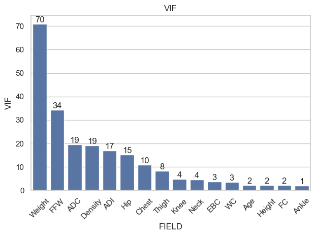
df_bodyfat_sel = df_bodyfat[
["Knee", "Neck", "EBC", "WC", "Age", "Height", "FC", "Ankle", "Body Fat"]
]body_fat_SL_2 = custom_statsmodel_OLS(
df_bodyfat_sel,
"Body Fat",
"Knee",
"Neck",
"EBC",
"WC",
"Age",
"Height",
"FC",
"Ankle",
)body_fat_SL_2_fit = body_fat_SL_2.fit()print(body_fat_SL_2_fit.summary2()) Results: Ordinary least squares
==================================================================
Model: OLS Adj. R-squared: 0.442
Dependent Variable: Body Fat AIC: 1609.1443
Date: 2024-03-29 11:15 BIC: 1640.9092
No. Observations: 252 Log-Likelihood: -795.57
Df Model: 8 F-statistic: 25.83
Df Residuals: 243 Prob (F-statistic): 1.05e-28
R-squared: 0.460 Scale: 33.534
--------------------------------------------------------------------
Coef. Std.Err. t P>|t| [0.025 0.975]
--------------------------------------------------------------------
const -23.6281 9.1181 -2.5913 0.0101 -41.5887 -5.6674
Knee 1.1799 0.2454 4.8071 0.0000 0.6964 1.6634
Neck 0.7565 0.2681 2.8217 0.0052 0.2284 1.2846
EBC 0.6198 0.2074 2.9889 0.0031 0.2113 1.0282
WC -2.4084 0.7041 -3.4207 0.0007 -3.7953 -1.0215
Age 0.1878 0.0331 5.6709 0.0000 0.1226 0.2531
Height -0.3859 0.1099 -3.5119 0.0005 -0.6023 -0.1694
FC 0.2852 0.2632 1.0835 0.2797 -0.2333 0.8037
Ankle 0.1151 0.2918 0.3944 0.6936 -0.4596 0.6898
------------------------------------------------------------------
Omnibus: 0.516 Durbin-Watson: 1.798
Prob(Omnibus): 0.773 Jarque-Bera (JB): 0.553
Skew: 0.108 Prob(JB): 0.758
Kurtosis: 2.921 Condition No.: 2811
==================================================================
Notes:
[1] Standard Errors assume that the covariance matrix of the
errors is correctly specified.
[2] The condition number is large, 2.81e+03. This might indicate
that there are strong multicollinearity or other numerical
problems.custom_VIF(body_fat_SL_2)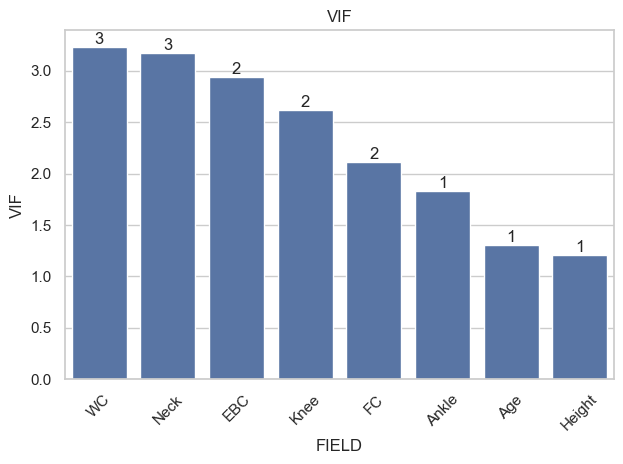